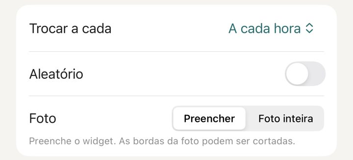

O widget de fotos está cortando rostos? Como resolver no iPhone
Um widget tem formato fixo. A sua foto, quase nunca tem o mesmo. Quando os dois não combinam, o widget precisa cortar alguma coisa — e, em fotos de pessoas, muitas vezes é o alto da cabeça ou quem está na beirada.
No Mantel há duas formas de resolver. As duas são grátis.
Por que os rostos são cortados
O widget pequeno é quadrado. A maioria das fotos do iPhone é 3:4 em pé ou 4:3 deitada. Para preencher o quadrado, uma parte da foto fica de fora. Sem ajuste, o recorte é feito no meio da foto, então um rosto perto do topo ou da lateral pode ficar de fora.
Solução 1: escolha o ponto que fica visível
Ideal quando você quer o widget preenchido de ponta a ponta, mas centrado no rosto.
Abra o Mantel e abra o conjunto que tem a foto.
Toque e segure a foto e toque em “Ajustar posição”.
Toque ou arraste o ponto que quer manter visível. As prévias Pequeno e Médio, abaixo da foto, mudam na hora.
Toque em “Salvar”. O widget passa a recortar em volta desse ponto.
Dá para escolher um ponto diferente para cada foto. Para voltar ao meio, toque em “Centralizar”.
Solução 2: mostre a foto inteira
Ideal quando nada pode ser cortado — uma foto em grupo ou uma foto com texto.
Abra o conjunto.
Em “Foto”, escolha “Foto inteira”.

O widget mostra a foto inteira sem cortar, com uma pequena margem. Isso vale para todas as fotos do conjunto. “Preencher” volta a preencher o widget.
Qual usar?
Uma pessoa ou um pet — Solução 1. O widget continua cheio e o rosto aparece.
Várias pessoas ou uma paisagem larga — Solução 2. Ninguém é cortado.
Um pouco de cada — separe em conjuntos, um em “Preencher” e outro em “Foto inteira”, cada um no seu widget (mais de um conjunto é do Pro).
Perguntas
Ajustar a posição muda a minha foto original?Não. O Mantel só guarda qual ponto manter visível. Suas fotos originais nunca são alteradas.
Isso é um recurso do Pro?Não. “Ajustar posição” e “Foto inteira” são grátis. A versão grátis inclui um widget pequeno; os widgets médio e grande são do Pro.
Como desfaço?Abra “Ajustar posição” de novo, toque em “Centralizar” e depois em “Salvar”.